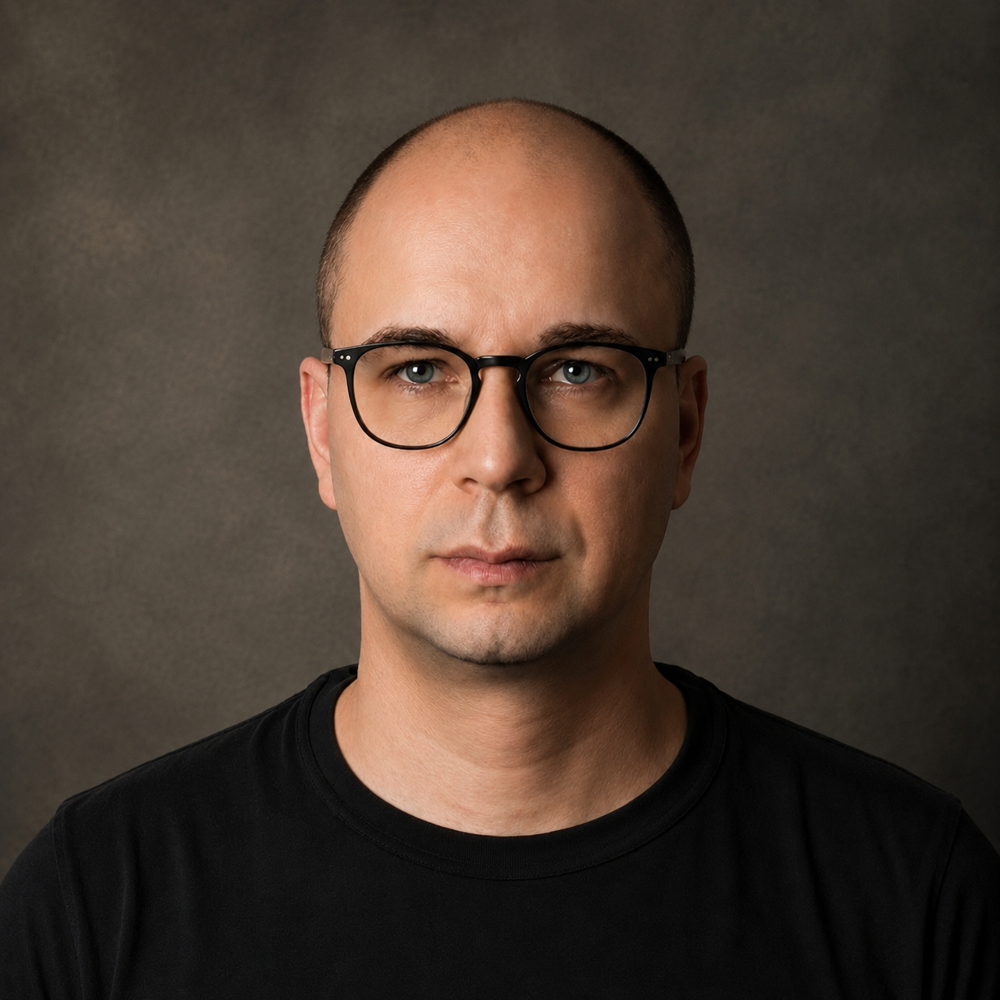

Впорядковую інформацію у IT-продуктах, роблячи її зрозумілою для людей.
Народився в Києві у 1981 році в родині професійних музикантів.
Маю практичний досвід роботи з інтерфейсами, текстами та графікою.
Уважний до деталей, добре працюю з уже наявним матеріалом: можу його систематизувати, відредагувати та підготувати до використання.
Розгляну практичну роботу, де важливе послідовне та якісне виконання конкретних завдань.
Виконував зокрема: аудит сайтів, структурування текстів, приведення графічного матеріалу до єдиного стилю тощо.
Проєктував e-commerce рішення для сайту інтернет-магазину «Фокстрот». Проводив чисельні перемовини та мітинги з клієнтами.
Розробляв структуру сторінок, збирав прототипи, редагував та впорядковував тексти для освітньої платформи.
Для порталів Podomu та Stylet створював макети сторінок та опрацьовував їхню структуру.
Працював над інтерфейсами, зокрема для компанії «Воля Кабель».
Створював макети сторінок сайту оренди житла та узгоджував рішення з власником проєкту.
Брав участь у дослідженнях і тестуванні міської навігації. У проєкті велонавігації контролював макети та встановлення знаків.
Провів фотографування 18 станцій метро та польове опитування 100 респондентів.
Комплектував та контролював відправлення інтернет-замовлень. Також створив та підтримував корпоративний стиль магазину.
Виконую духовні твори І. С. Баха на органі.
Артист оркестру. Брав участь у концертній та гастрольній діяльності.
Магістр з музичного мистецтва.